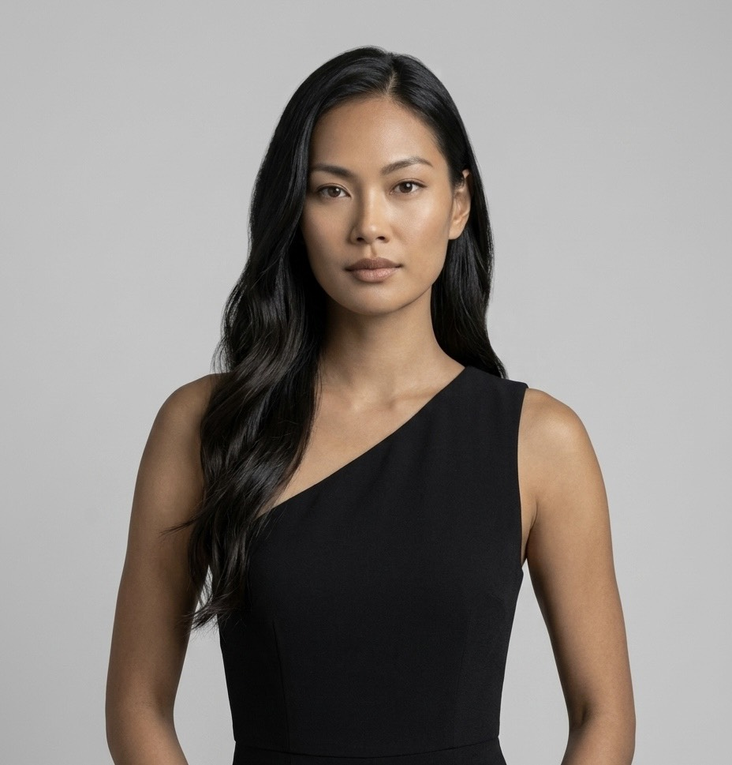
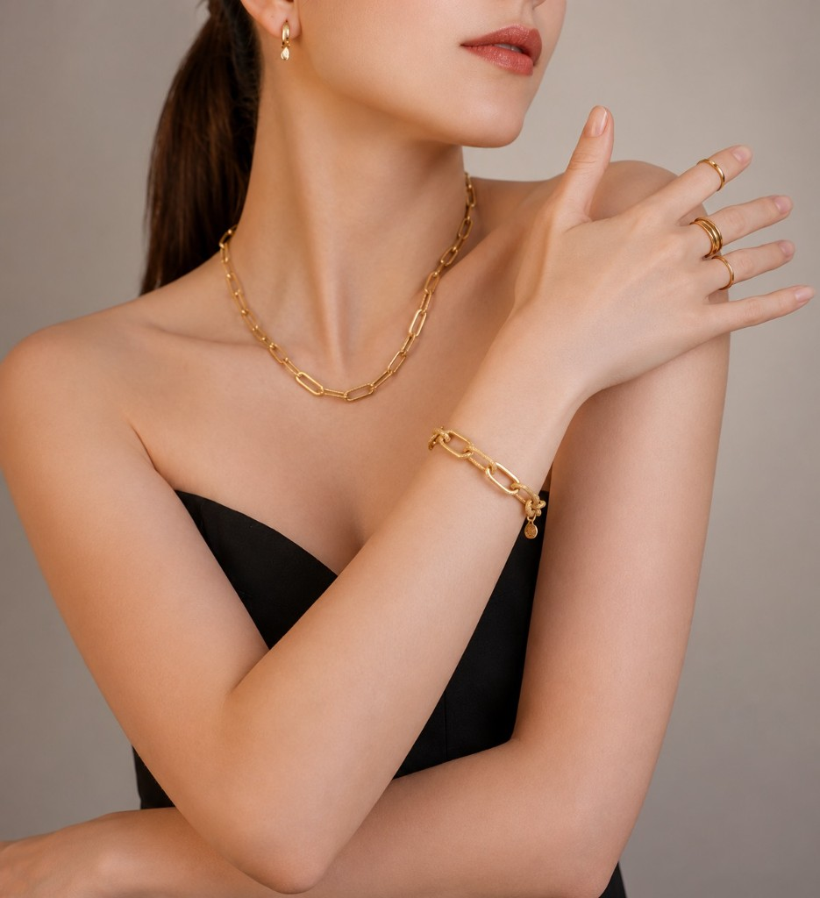
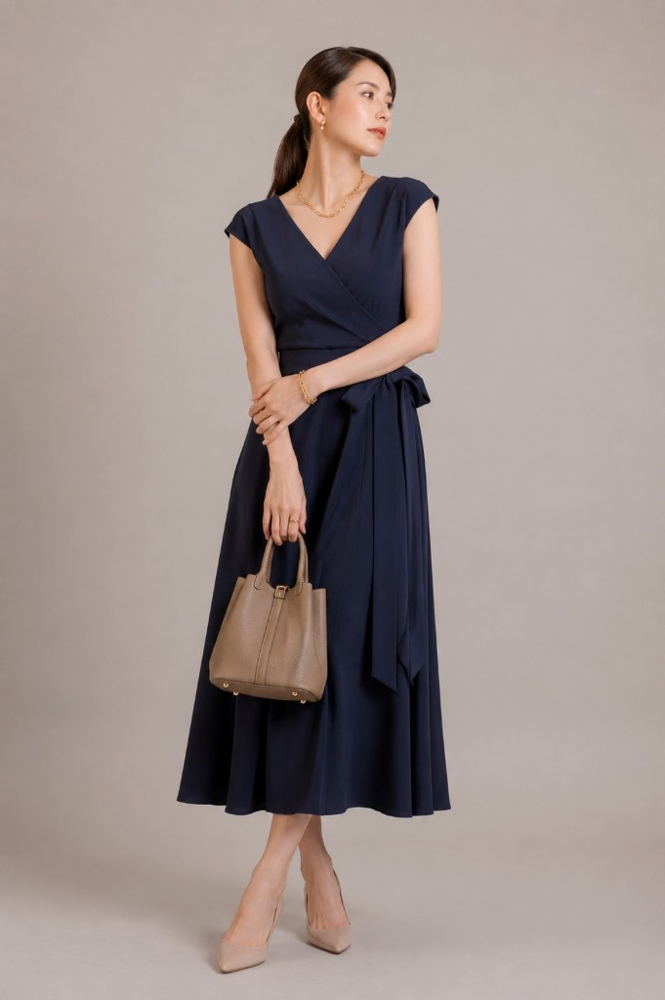
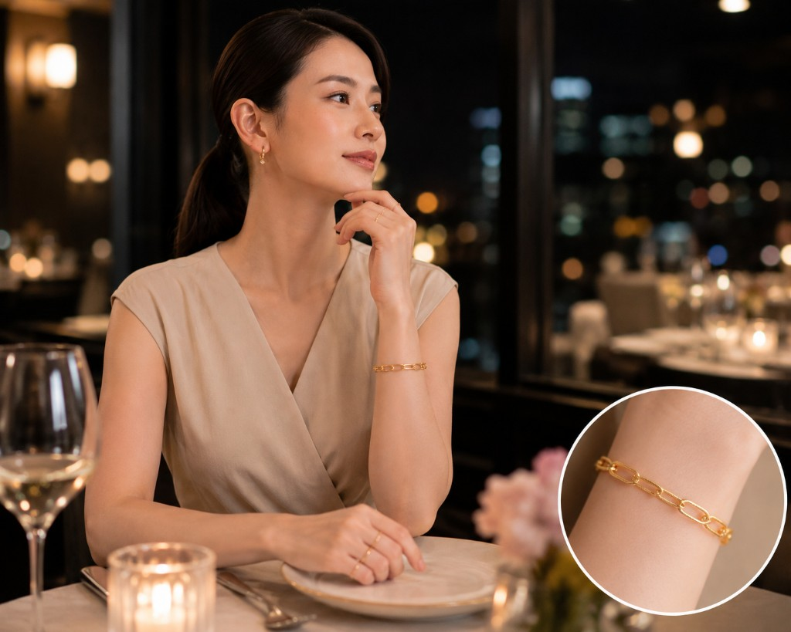

Screen 01
ログイン
共有の社内アカウントで入る。ブランド名が最初の画面の主役。
Ti amo
Jewelry
Studio
イタリアンゴールドジュエリーの商品ページ用写真を、型どおり10枚そろえる。
Internal · EC Ops
Sign in
社内ログイン
Screen 02
新規ジョブ
3枚アップロードと、カテゴリ・地金・人物・背景・トーンを1画面で指定。
商品写真 3枚
同一商品・白〜淡色背景・角度違い。順序がディテール1〜3に対応。サムネを選ぶとメインを切替。
メイン写真: 1枚目 を着用合成に使用
カテゴリ
着用シーンでは腕まわりを写します
地金カラー
人物プリセット（1人選ぶ · このジョブ内で固定）

Miaディテール背景（3枚で統一）

白大理石 · トラバーチン · リネン · 黒石
全身トーン（ちょうど2つ）
2/2 選択中
上限に達した候補は選べません（解除してから変更）
必須が揃っている例 → 生成可能
不足例: 人物プリセットが未選択です
Screen 03
進捗
目安 2〜4分。いまどの段階かが分かる。
生成しています
ブレスレット · YG · Sofia · 白大理石
およそあと 1分 · 全体の目安 2〜4分
- ✓ 切り抜き
- ✓ ディテール（背景・色調整）
- 3 人物シーン生成
- 4 実物合成
- 5 仕上げ（インセット）
Screen 03b
進捗 · 失敗
段階名つきで失敗を見せ、最初から／失敗段階からリトライ。
FAILED
人物シーンで失敗しました
段階「人物シーン生成」でエラー。切り抜きとディテールは残っています。
- ✓ 切り抜き
- ✓ ディテール（背景・色調整）
- ! 人物シーン生成 — 失敗
- 4 実物合成
- 5 仕上げ（インセット）
Screen 04
レビュー
10枠を確認。ダメな枠だけ再生成。着用は大きさ・位置を調整してからZIP。
10枚の確認
ジョブ js-2048 · 同一人物 Sofía · 2000×2000
Detail · AI人物なし · 01–03
01 detail_a
ディテール A を再生成しますか？
人物は変わりません。背景・色だけやり直します。
02 detail_b
03 detail_c
Wear · 着用シーン · 04–07
オフィス

07 holidayBody & Inset · 08–10

08 body · トーン1
10 wide_insetインセット元: ディテール A ▾
3枚を上げる → 待つ → 直す → ZIP
ログイン、入力、進捗（成功・失敗）、レビューがこのツールの骨格です。 本実装ではこの見た目を Next.js に落とし、裏側で Python ワーカーが10枚を組み立てます。